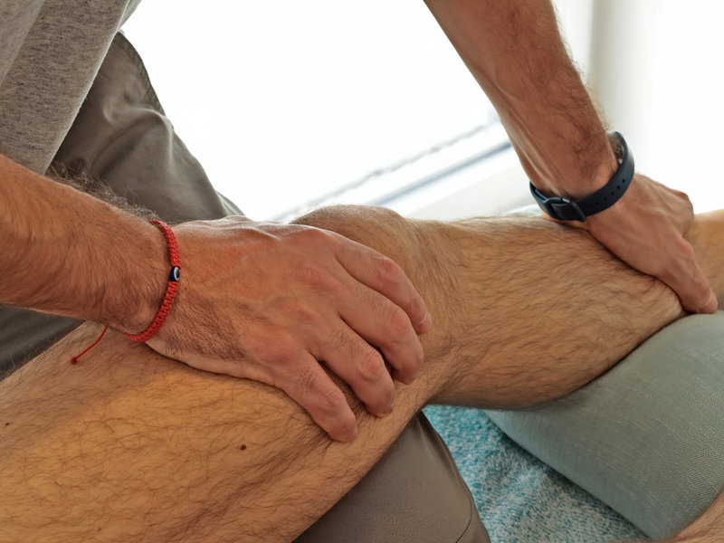
Physiothérapie du sport
Prévention, traitement et récupération des blessures liées à l’activité physique.
Objectif : optimiser la performance et éviter les rechutes.
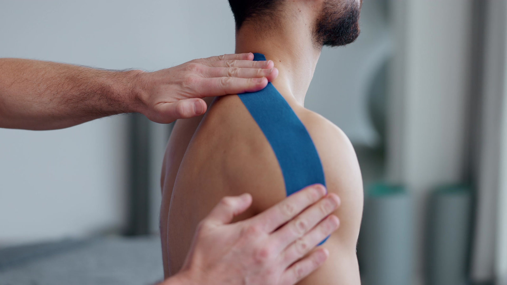
De la récupération après blessure aux soins préventifs

Prévention, traitement et récupération des blessures liées à l’activité physique.
Objectif : optimiser la performance et éviter les rechutes.
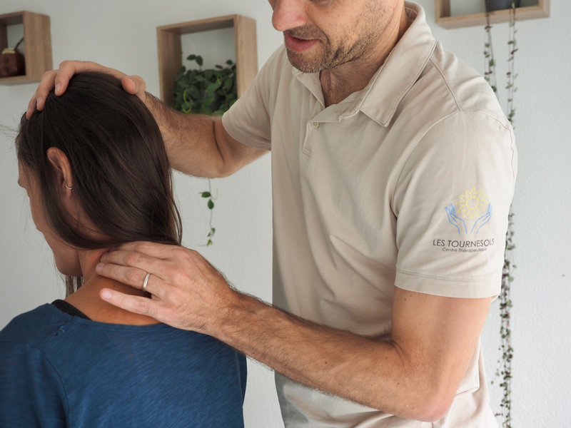
Indiquée pour fibromyalgie, syndrome myofascial, douleurs chroniques.
Objectif : réduire la douleur, améliorer la qualité de vie.
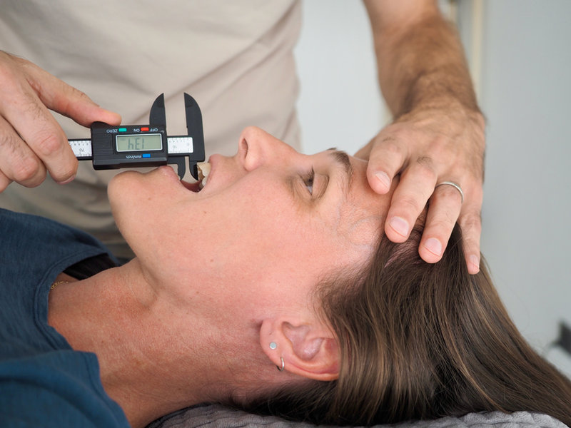
Troubles de l’articulation temporo-mandibulaire, tensions du visage, bruxisme, céphalées d’origine cervicale, névralgies crânio-faciales.
Objectif : soulager la douleur et rétablir la fonction crânio-faciale.
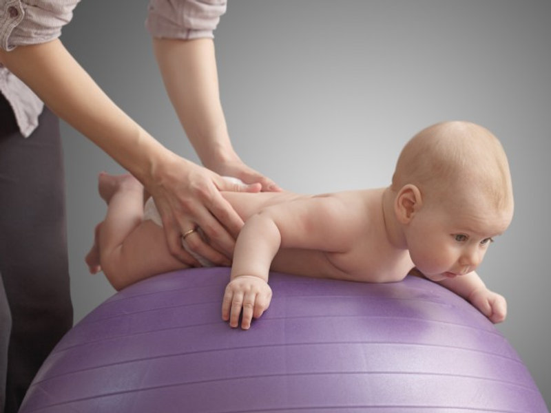
Soins pour nourrissons, enfants et adolescents avec troubles du développement, neurologiques ou musculosquelettiques.
Objectif : accompagner le développement moteur dès le plus jeune âge.
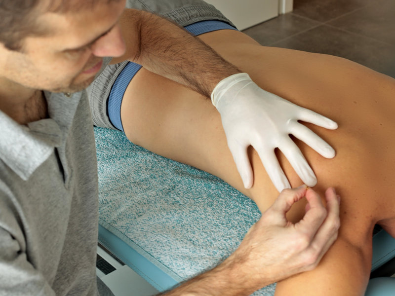
Blessures musculaires, articulaires, tendineuses et ligamentaires. Idéal pour entorses, fractures, lombalgies.
Objectif : retrouver mobilité, force et fonctionnalité.
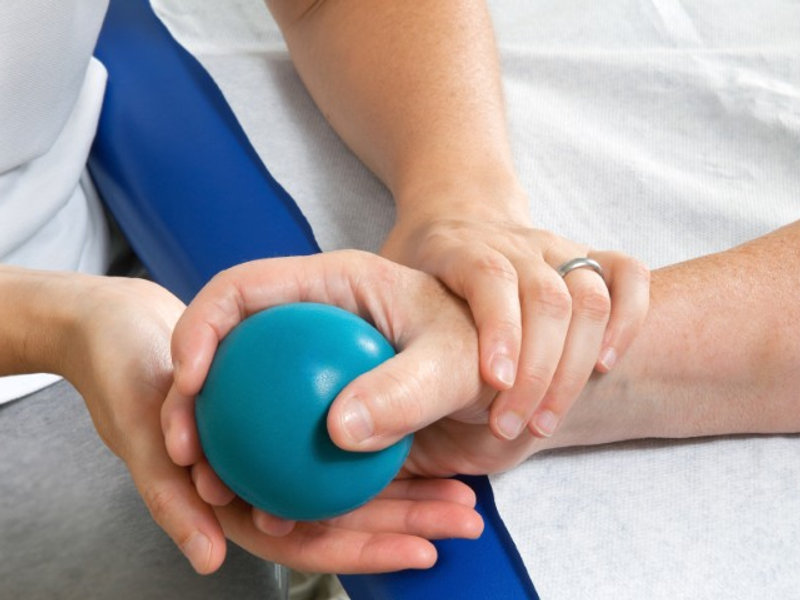
Troubles du système nerveux central ou périphérique (AVC, Parkinson, SEP, etc.).
Objectif : améliorer coordination, équilibre, posture et autonomie.
« Notre philosophie basée sur les neurosciences modernes »
Le corps et l’esprit ne sont pas des entités séparées, mais des composantes interdépendantes d’un tout intégré.
Qui vous accompagne
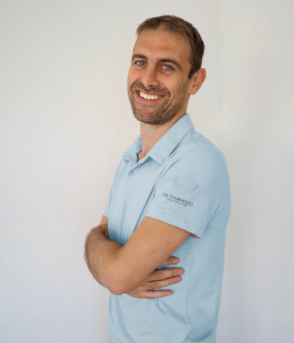
Physiothérapeute
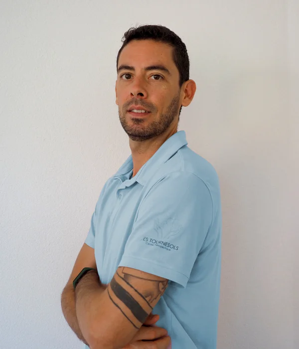
Physiothérapeute
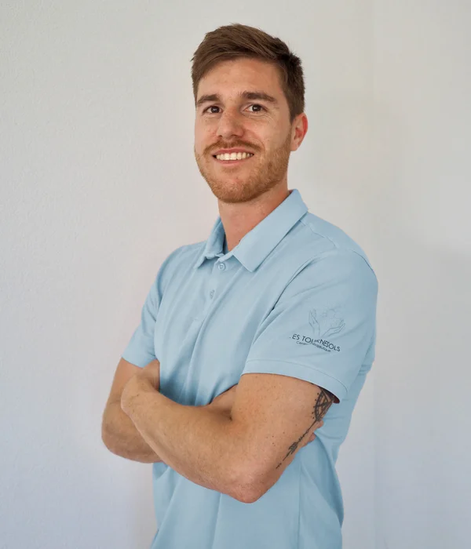
Physiothérapeute
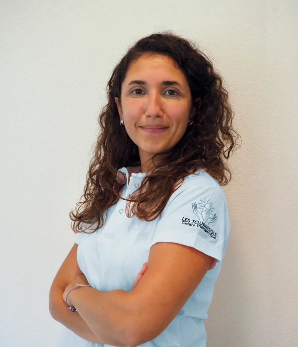
Physiothérapeute – Pédiatrie
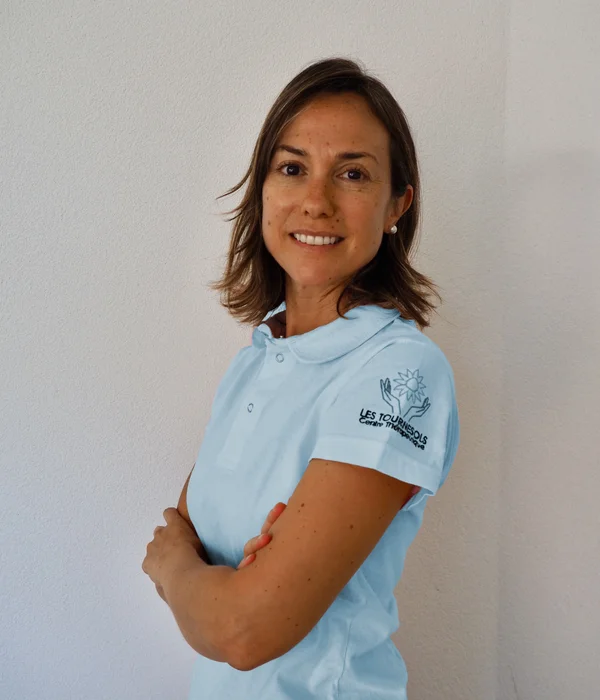
Professeure de Pilates
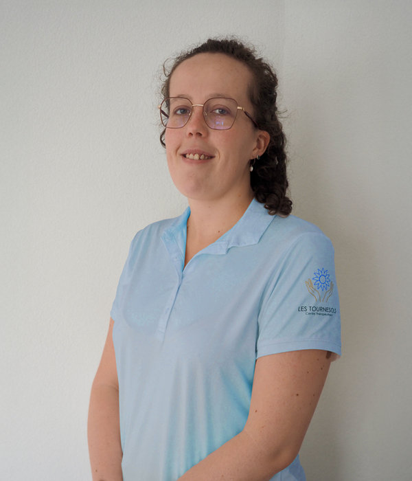
Physiothérapeute — Pédiatrie & Orthopédie
Ce que nos patients disent
Excellente expérience au Centre Thérapeutique Les Tournesols. J’ai été accueillie avec beaucoup de bienveillance et de professionnalisme.
Caro MagroDès l’entrée du centre, l’ambiance est apaisante, chaleureuse et très agréable. On s’y sent tout de suite en confiance.
Sarah PillonelJe suis suivie depuis plusieurs années par Mariano et je ne peux que recommander ce centre. Toute l’équipe est professionnelle et à l’écoute.
Mélanie ReyConseils et informations sur la santé
Chemin de la Romanellaz, 8A — 1023 Crissier
Accès depuis l’école La Romanellaz, le parking Chemin de Broillet, la boulangerie-Restaurant la Pinte, et le parking du chemin des Oches du Mur.
Depuis l’hôtel de ville de Crissier, direction l’église. Parking couvert du Bourg sur votre droite — gratuit les 30 premières minutes, accès direct au centre.
Bus 18, 32 et 54 jusqu’à la rue du centre de Crissier.
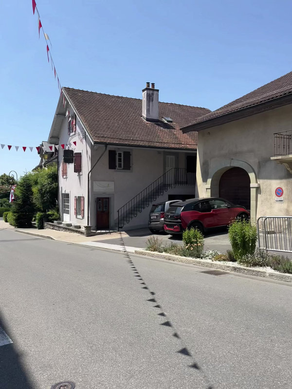
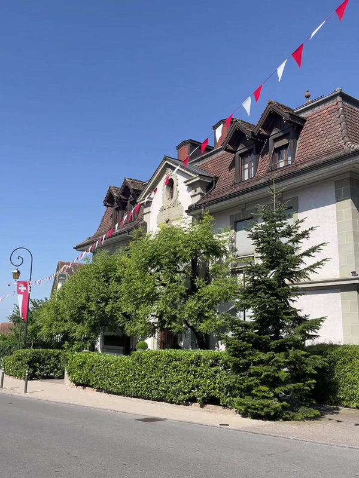
Parlons-nous
Le plus rapide : écrivez-nous sur WhatsApp, on vous répond avec les premiers horaires disponibles.